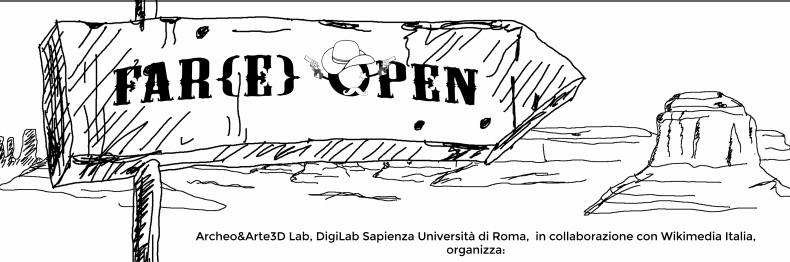

Locandina dell’evento di Lorena Cammerata
Uno dei punti deboli delle attività destinate alla promozione della conoscenza aperta consiste nella mancanza di una visione sinergica e operativa a fronte di idee di valore. Ne deriva una certa autoreferenzialità di singoli progetti e di promotori, con una moltiplicazione esponenziale e dunque sovrapposizione di eventi, e la relativa carenza di una reale cooperazione e scambio di conoscenze, tese all’accrescimento della sensibilità verso le istanze della cultura libera.
Partendo da questa riflessione, Archeo&Arte3D Lab – DigiLab Sapienza, in collaborazione con Wikimedia Italia, ha deciso di realizzare una serie di incontri operativi, “Far{e} Open: frontiere di opportunità”, il primo dei quali ha avuto luogo il 24 ottobre(1). Il titolo ha voluto evidenziare l’ambigua valenza di cui è vittima la realtà open: se ne ravvisano le potenzialità, ma al contempo permane il timore di un qualcosa di evanescente. Una duplice sensazione che ricorda la frontiera nel vecchio West, foriera di speranze e di terribili pericoli.
Diverse iniziative hanno ottenuto risultati nella direzione di un’effettiva condivisione della conoscenza, una reale restituzione alla comunità, un concreto coinvolgimento della cittadinanza in percorsi attivi: l’incontro di apertura ha presentato alcune di esse, concluse o meno, non a caso all’interno di una cornice istituzionale che si occupa di ricerca e formazione. La volontà è di creare giuste contaminazioni di saperi e di idee tra istituzioni, università e comunità open interessate ai Beni Culturali, ognuno portando il proprio contributo alla discussione. Quello della conoscenza aperta è un tema naturalmente incline a presentarsi come trasversale ed interdisciplinare, coinvolgendo diversi attori: richiede pertanto un impegno collettivo affinché si garantisca quella continuità di svolgimento che trasformi l’operatività in prassi. Per rispondere a tale necessità, si è deciso di organizzare una serie di incontri cadenzati orientati alla pratica che culmineranno in un convegno nella metà del 2016.
La capacità relazionale, non autoreferenziale e sinergica non è dunque una necessità emersa di recente, tuttavia le iniziative che hanno corrisposto a tale bisogno sono largamente insufficienti. Proprio per creare una più larga convergenza sulle istanze della liberazione dei dati e delle informazioni, gli interventi di Far{e}Open hanno illustrato attività in campo culturale e della Pubblica Amministrazione: OpenPompei, Museo Liquido, i progetti Wikimedia con università e a carattere GLAM, Riparte il Futuro. A seguire una tavola rotonda in cui si sono confrontati rappresentanti di diverse iniziative: OpenPuglia, ICCU, CNR ITABC, OpenDataMonuments, Professione Archeologo, Wikimedia Italia e DigiLab OpenLab.
Esperienze molto diverse tra di loro, eppure con alcuni problemi trasversali comuni, come la mancanza di dati di qualità e la necessità di rafforzare le competenze digitali di chi è deputato alla raccolta e gestione di informazioni di interesse pubblico, nonché modalità e forme di una loro restituzione alla comunità. Da parte delle istituzioni culturali pubbliche sembra esserci infatti una forma di resistenza quasi patologica al rilascio di dati: un esempio largamente dibattuto è il riutilizzo delle immagini di beni culturali, non consentito, in estrema sintesi, perché con una licenza di tipo libero (dunque, non CC BY-NC-ND(2) come spesso viene chiesto) si corre il rischio di un eventuale utilizzo commerciale; questo mentre musei come il Rijksmuseum hanno adottato una politica contraria, assistendo ad una crescita di visitatori, visibilità(3), popolarità e vendita di merchandising, tendenza al momento solo vagheggiata da una qualunque controparte italiana(4). Recentissima è la notizia(5) del rilascio, da parte della The New York Public Library, di oltre centottantasettemila (!) immagini del proprio archivio, scaricabili gratuitamente in formato digitale e ad alta risoluzione.
Nei prossimi incontri di Far{e}Open, ognuno dei quali avrà una propria identità tematica, si vuol dunque continuare a presentare buone pratiche reali e non ipotizzate di produzione e riuso di dati aperti già in atto, e contribuire con una serie di iniziative e workshop atti a contribuire alla produzione di dati o al loro riuso; a tali attività si affiancheranno una serie di pubblicazioni open access con il report degli incontri e degli interventi, più una serie di manuali operativi tanto sulle buone pratiche, quanto sulle tecniche di produzione di dati aperti, con la ferma speranza di coinvolgere quante più istituzioni, associazioni, persone possibili e di realizzare una rete funzionante e proattiva in nome della condivisione e della collaborazione aperta.
Archeo&Arte 3D Lab
[Paola L. Buttiglione, Saverio G. Malatesta, Francesco Lella]
Note:
1. Si è tenuto presso la sede Sapienza delle vetrerie Sciarra, seguito dall’assemblea del decennale di Wikimedia Italia (link)
2. Ossia Creative Commons Non Commerciale – Non opere Derivate, modalità di condivisione che di fatto bloccano qualsiasi possibilità di riutilizzo dei dati stessi.
3. http://www.rijksmuseum.nl/nl/downloads/13df6841-9503-4b61-8549-85e9f129bcf3/Rijksmuseum-Grand-National-Product.pdf
4. Nella top ten dei musei d’Arte più visitati nel 2014, secondo i dati forniti dall’Art Newspaper nell’Aprile 2015, ci sono solo i Musei Vaticani, che si trovano però all’interno della Città del Vaticano (quindi propriamente in un altro stato): il primo museo italiano è la Galleria degli Uffizi, al ventiseiesimo posto
5. http://publicdomain.nypl.org/pd-visualization/

{kind=link}